Dexterous Hand Policy Bench
14 language-instructed atomic primitives over cards and chips, each with 105 teleoperated demonstrations, a fixed 100/5 split, and a shared 30-dimensional joint-position action space.
A Texas Hold'em-style tabletop benchmark that couples semantic grounding, sequential state tracking, and fine-grained multi-finger manipulation on a ShadowHand-UR10e platform.
Abstract
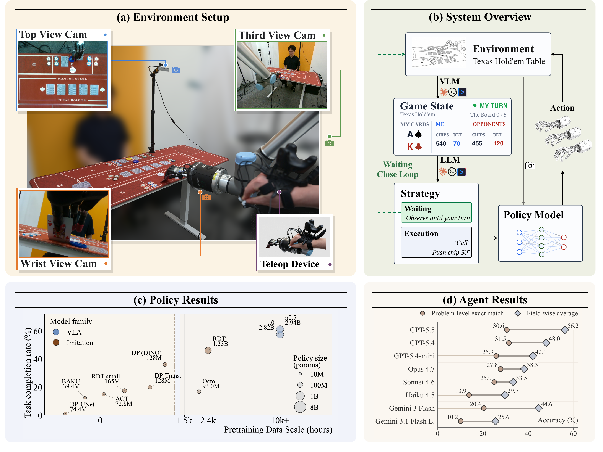
Current embodied-agent benchmarks often emphasize semantic grounding and planning while relying on simulation, coarse actions, or gripper-centric manipulation. Dexterous-manipulation benchmarks capture contact-rich control, but usually evaluate isolated motor skills without instruction-conditioned visual grounding or long-horizon state tracking.
We introduce DexHoldem, a real-world ShadowHand benchmark that uses Texas Hold'em-style tabletop interaction to couple semantic grounding, sequential state tracking, and fine-grained multi-finger manipulation. The benchmark contains 1,470 teleoperated demonstrations across 14 atomic card and chip primitives, a completed physical policy evaluation, and a 36-problem perception benchmark for parsing turn state, cards, chips, bets, robot activity, recovery conditions, and outcomes.
Benchmark Scope
DexHoldem is not a benchmark of gambling strategy. It uses Hold'em-style tabletop interaction as a controlled real-world setting where semantic state, object layout, long-horizon progress tracking, and dexterous physical execution all matter.
14 language-instructed atomic primitives over cards and chips, each with 105 teleoperated demonstrations, a fixed 100/5 split, and a shared 30-dimensional joint-position action space.
36 fixed tabletop states test whether an agent can produce structured artifacts for loop stage, robot behavior, turn ownership, cards, chips, bets, scene stability, and outcome.
A protocol-only capture-parse-route-execute-verify loop composes visual state parsing, legal high-level actions, primitive execution, recovery, and human intervention when safe continuation fails.
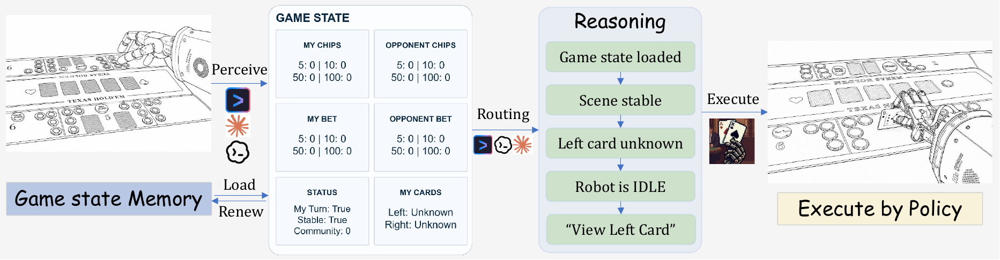
The policy benchmark isolates atomic dexterous execution from game-level decision making. Each policy is evaluated under the same 80-rollout physical primitive schedule and scored with a four-level rubric that separates task completion from scene preservation.
| Robot Platform | ShadowHand on UR10e, real-world tabletop |
|---|---|
| Observations | Top-down, third-person, wrist RGB-D views plus arm and hand proprioception |
| Policy Data | 100 train and 5 validation trajectories per primitive |
| Perception Data | 36 labeled tabletop-state problems with deterministic semantic checks |
| Evaluation | SPSR/TCR for completed policy rollouts; strict exact-match and field-wise perception accuracy; protocol specification for system rollouts |
Embodied System
DexHoldem Skills provides the agent-side runtime for launching a self-contained
experiment. The released skill variants include dexholdem-v2 for scoped
subagents and dexholdem-v2-native for a single coding agent that directly
follows the visual guidelines, router, executor, and durable state-cache contract.
Activity
Game State Memory
00_capture.jpg from the current state folder.01_parsed_state.md with loop stage, robot status, table fields, and uncertainties.visual_parse, resolve_turn, resolve_uncertain_fields, and verify_sequence_complete.npx skills add DexHoldem/DexHoldemSKills
Agentic Perception Bench
Each perception problem asks an agent to parse the routing-relevant table state from
visual evidence and write auditable artifacts such as visual_summary.json,
eval_report.md, and nonempty visual evidence. The benchmark separates
perception from poker-action selection and physical execution, making failures easier
to diagnose.
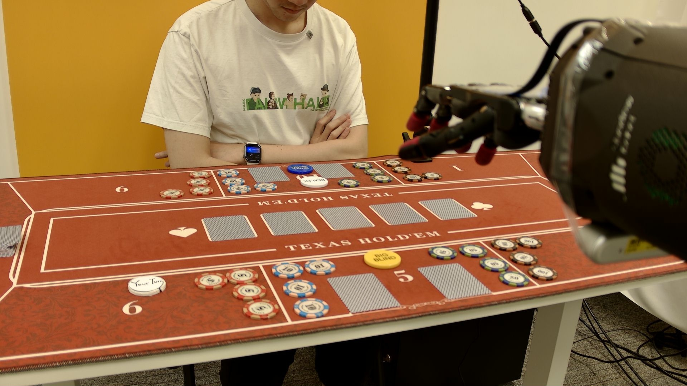
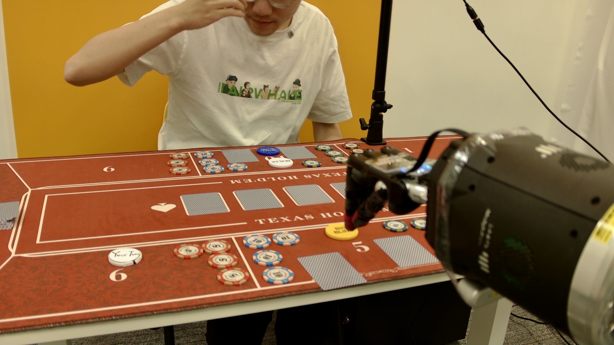
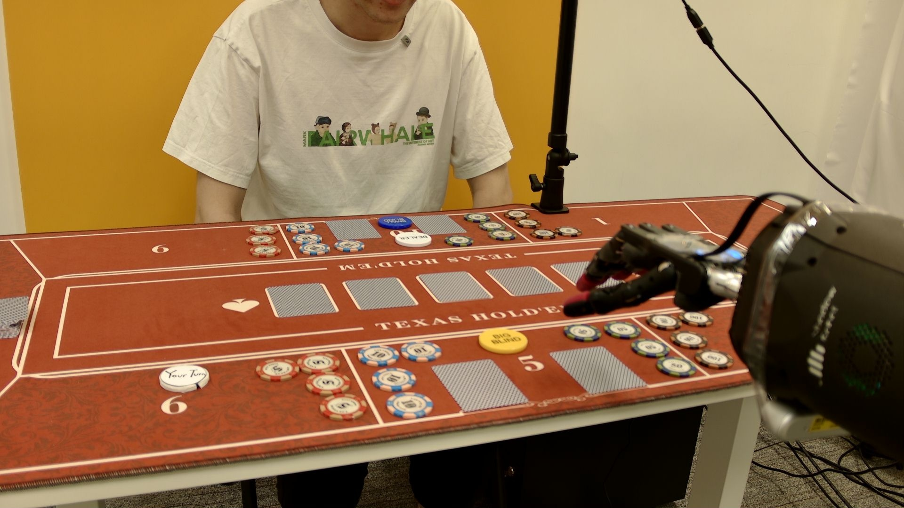
Initial turn ownership and wait-vs-act decisions.
Motion, cached sequence continuation, and activity-stage tracking.
Retryable recovery, down states, and human intervention.
Cards, chips, bets, and turn state for downstream routing.
Robot-held card identity and cached sequence routing.
Fold, showdown, win/loss, and collect-winnings transitions.
Results
Policy results are measured over 80 real-world primitive rollouts per model. Perception results use strict problem-level exact-match over 36 tabletop states, plus field-wise diagnostic accuracies. Full-system rollouts are released as an evaluation protocol and runtime interface rather than a completed hand-level leaderboard.
| Policy | Family | SP | DC | TF | DF | SPSR | TCR |
|---|---|---|---|---|---|---|---|
| π0.5 | VLA | 38 | 11 | 31 | 0 | ||
| π0 | VLA | 38 | 8 | 33 | 1 | ||
| RDT | Robot-pretrained | 24 | 13 | 40 | 3 | ||
| DP (DINO) | Task-trained | 21 | 8 | 48 | 3 | ||
| DP-Transformer | Task-trained | 11 | 5 | 46 | 18 | ||
| RDT-small | Task-trained | 11 | 3 | 59 | 7 | ||
| ACT | Task-trained | 8 | 4 | 67 | 1 | ||
| BAKU | Task-trained | 5 | 5 | 67 | 3 | ||
| DP-UNet | Task-trained | 1 | 0 | 79 | 0 |
| Harness | Perceiver | Overall | ST | TU | BL | CC | BT | MC | OC | OT |
|---|---|---|---|---|---|---|---|---|---|---|
| Codex | GPT-5.5 | 30.6 | 69.4 | 80.6 | 100.0 | 61.5 | 31.2 | 68.8 | 25.0 | 57.1 |
| Codex | GPT-5.4 | 31.5 | 65.7 | 93.5 | 100.0 | 23.1 | 31.2 | 56.2 | 18.8 | 47.6 |
| Codex | GPT-5.4-mini | 25.9 | 56.5 | 94.4 | 99.1 | 33.3 | 14.6 | 29.2 | 18.8 | 47.6 |
| Claude Code | Opus 4.7 | 27.8 | 44.4 | 94.4 | 100.0 | 46.2 | 6.2 | 43.8 | 18.8 | 14.3 |
| Claude Code | Sonnet 4.6 | 25.0 | 46.3 | 88.0 | 100.0 | 23.1 | 10.4 | 29.2 | 22.9 | 14.3 |
| Gemini CLI | Gemini 3 Flash | 20.4 | 63.9 | 77.8 | 100.0 | 28.2 | 18.8 | 29.2 | 22.9 | 71.4 |
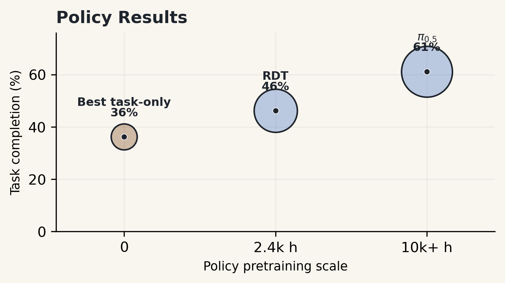
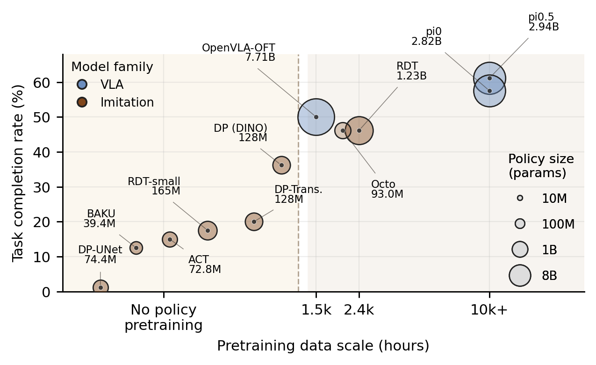
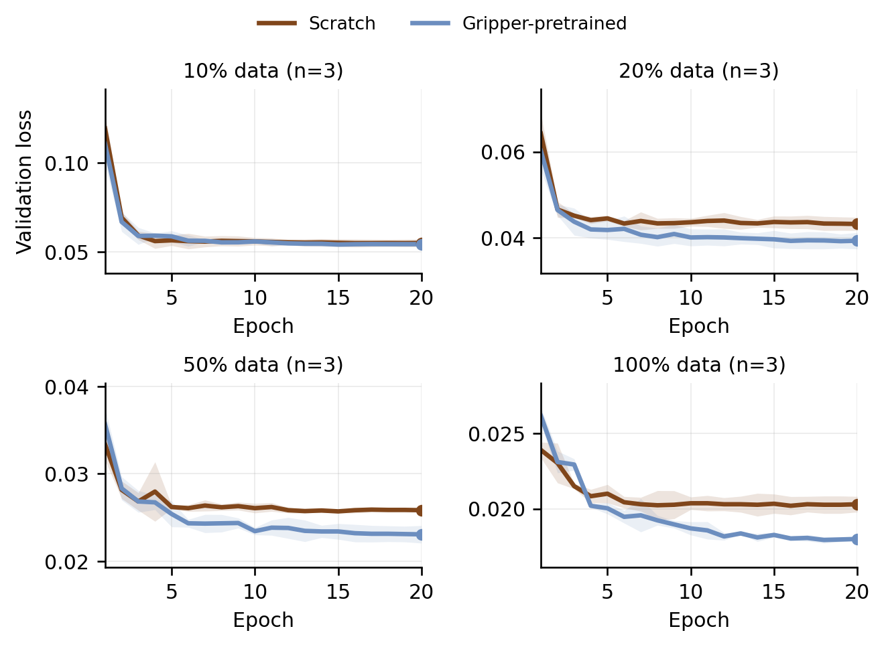
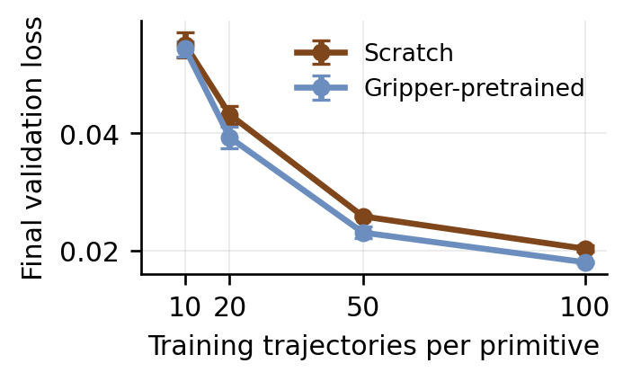
Demos & Release
Policy-bench rollouts are released as compressed web videos with labels recovered from the original model-task-result filenames. The released skills repository also provides a runnable agent loop and monitor dashboard for reproducing system-level experiments.
Policy Bench Rollouts
Source recordings are 4K 60fps MOV files. The hosted videos are 960x540 H.264 MP4 previews with original filenames preserved for traceability.
Perception Problem
Parse blind markers, turn ownership, chip layout, and initial route.
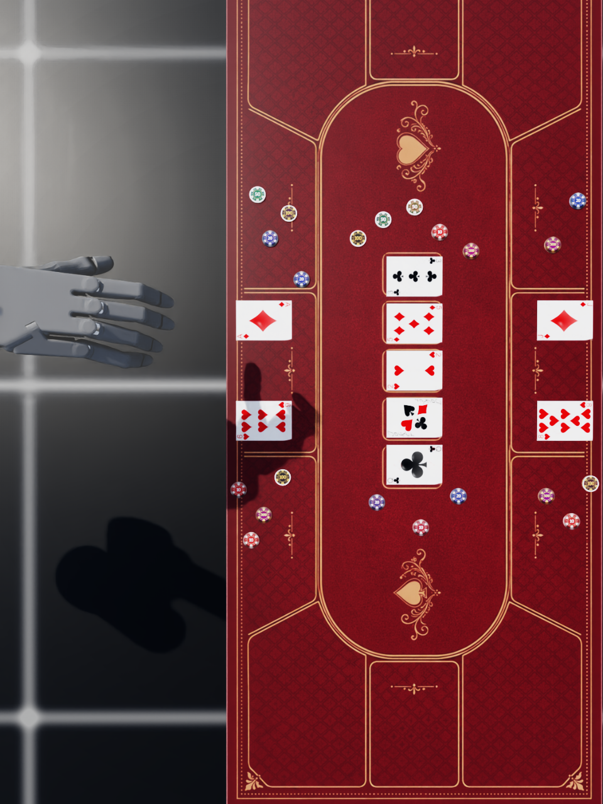
Policy Rollout
Instruction-conditioned pickup, placement, reveal, push, and pull skills.
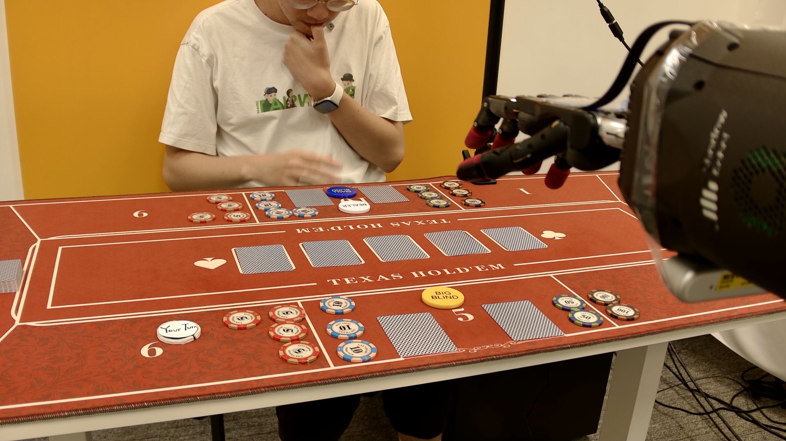
Runnable System
Launch dexholdem-v2-native experiments through a coding-agent native skill.
Benchmark Analysis
Qualitative and quantitative gaps between pretrained and task-trained policies.
Resources
@misc{dexholdem2026,
title = {DexHoldem: Playing Texas Hold'em with Dexterous Embodied System},
author = {Chen, Feng and Chu, Tianzhe and Sun, Li and Zhou, Pei and Xu, Zhuxiu and Gao, Shenghua and Zhai, Yuexiang and Yang, Yanchao and Ma, Yi},
year = {2026},
url = {https://dexholdem.github.io/Dexholdem/}
}